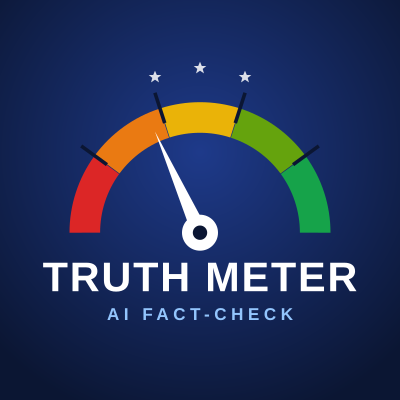
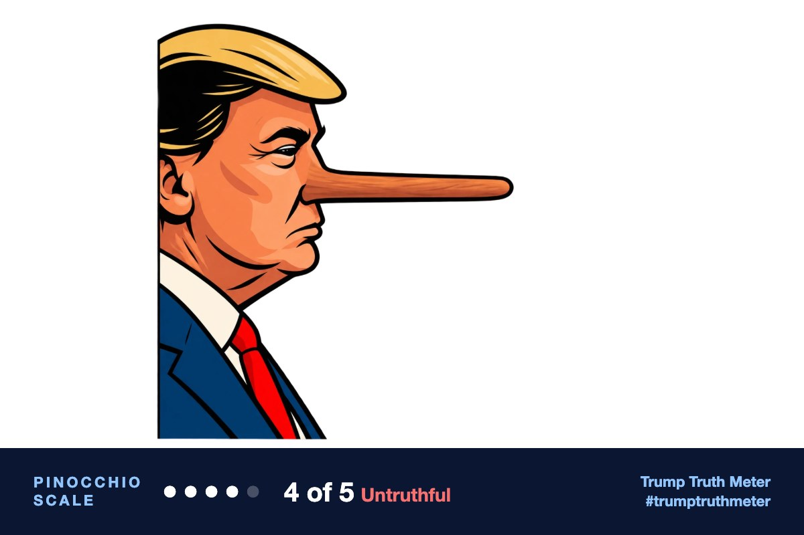

@realDonaldTrump · Oct 11, 2026, 10:47 PM ET · view on Truth Social
RT: https://truthsocial.com/users/realDonaldTrump/statuses/117425650086544713
[Quoting @realDonaldTrump]

Trump Truth MeterAI fact-checks of Truth Social postsRT: https://truthsocial.com/users/realDonaldTrump/statuses/117425650086544713
[Quoting @realDonaldTrump]

Kid Rock did say he does not want his grandchildren fighting a civil war over religious ideology, but the post's central charge—that Abdul El-Sayed is seeking to impose sharia law—is false. His record is secular progressive politics, and the 'wolf in sheep's clothing' attribution is not independently confirmed.
Someone else’s words (95% confident)
Trump reshared a screenshot of another user's X post and added no words of his own.